Tours en Lima
Tours guiados y free tours por Lima.
Actualizado el martes 17 de noviembre de 2026. Precios referenciales.
Filtrar por presupuesto y zona en Plancito →
- Ver y comprar →
Taller de ceviche en Lima
S/ 325.16 para dos (S/ 162.58 por persona)
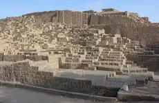
Ver y comprar →Tour por Miraflores y Huaca Pucllana
S/ 187 para dos (S/ 93.50 por persona)
- Ver y comprar →
Taller de cocina peruana + Tour por un mercado local
S/ 500.96 para dos (S/ 250.48 por persona)
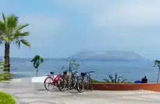
Ver y comprar →Tour en bicicleta por Miraflores y Barranco
S/ 170 para dos (S/ 85 por persona)
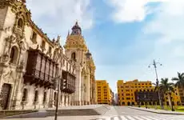
Ver y comprar →Tour privado por Lima
S/ 773.16 para dos (S/ 386.58 por persona)
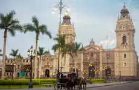
Ver y comprar →Tour por la Lima colonial + Circuito Mágico del Agua
S/ 370 para dos (S/ 185 por persona)
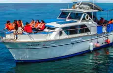
Ver y comprar →Paseo en barco por las Islas Palomino
S/ 498.58 para dos (S/ 249.29 por persona)
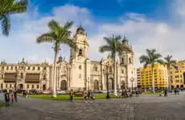
Ver y comprar →Free tour por Lima
Gratis
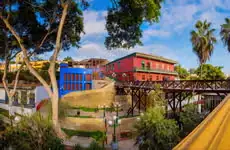
Ver y comprar →Free tour por Barranco
Gratis
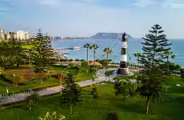
Ver y comprar →Free tour por Miraflores
Gratis
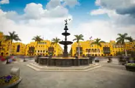
Ver y comprar →Tour por Lima
S/ 212 para dos (S/ 106 por persona)
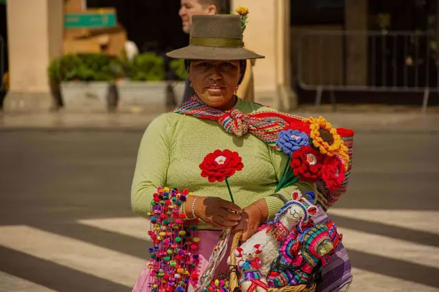
Ver y comprar →Free Tour Lima desde Miraflores: Viaja como Local
Gratis
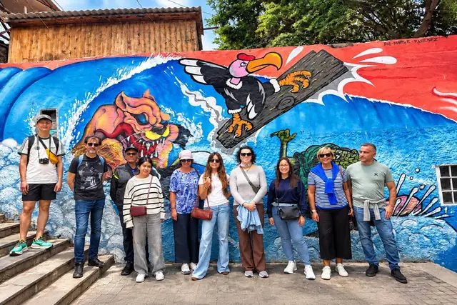
Ver y comprar →Free Tour Barranco: Descubre las Calles Coloridas y el Arte Urbano
Gratis
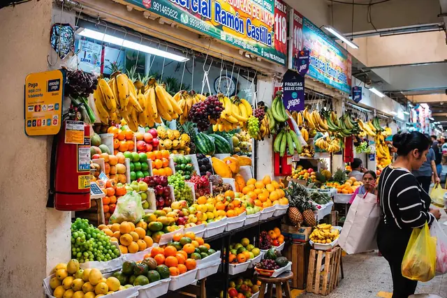
Ver y comprar →Free Food Tour Lima: Sabores Locales a Pie
Gratis
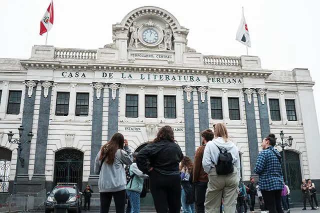
Ver y comprar →Free Tour Centro Histórico: Plazas, Balcones y Pisco
Gratis
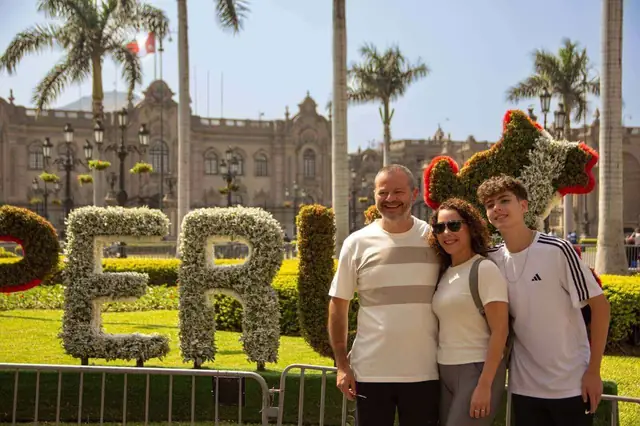
Ver y comprar →Tour por el Centro Histórico de Lima
S/ 150 para dos (S/ 75 por persona)
- Ver y comprar →
Tour a Pachacamac – El Templo Inca de Lima (Oferta)
S/ 262.50 para dos (S/ 131.25 por persona)
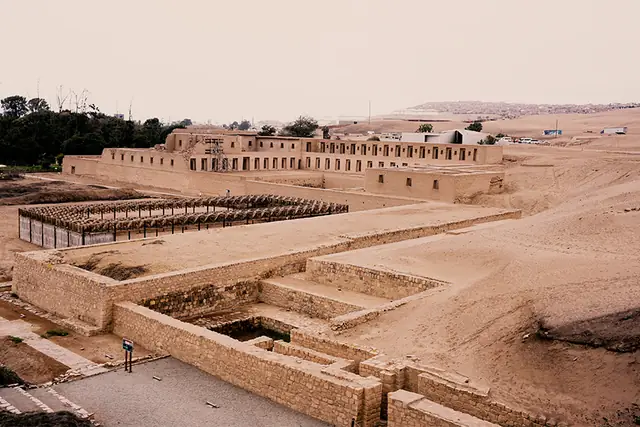
Ver y comprar →Ruinas de Pachacamac y Museo de Sitio Servicio Grupal
S/ 277.50 para dos (S/ 138.75 por persona)
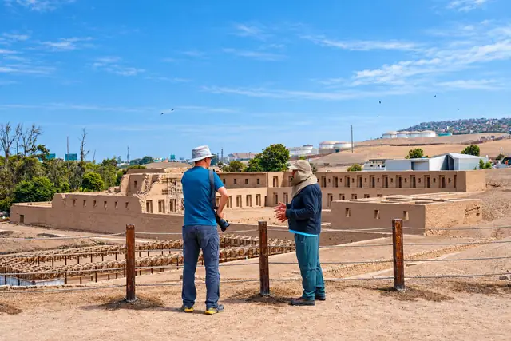
Ver y comprar →Tour a Pachacamac: Tras las Huellas del Antiguo Oráculo
S/ 300 para dos (S/ 150 por persona)
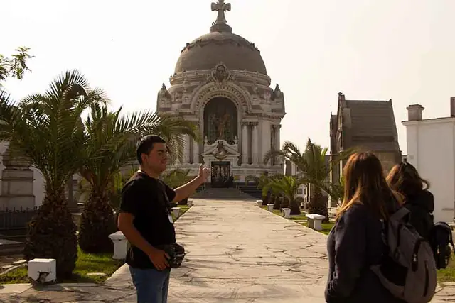
Ver y comprar →Tour al Cementerio Presbítero Maestro: Historia y Misterios de Lima
S/ 320.62 para dos (S/ 160.31 por persona)
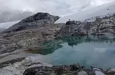
Ver y comprar →Trekking por el Nevado Raura + Baños termales de Churín
S/ 371.72 para dos (S/ 185.86 por persona)
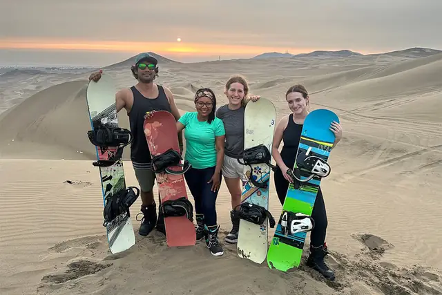
Ver y comprar →Sandboarding en Aucallama con Tabla Profesional Viaja al limite
S/ 375 para dos (S/ 187.50 por persona)
- Ver y comprar →
Tour del vino por Lima
S/ 397.42 para dos (S/ 198.71 por persona)
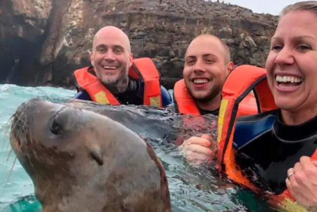
Ver y comprar →Tour Islas Palomino en yate – Nada con lobos marinos
S/ 405 para dos (S/ 202.50 por persona)
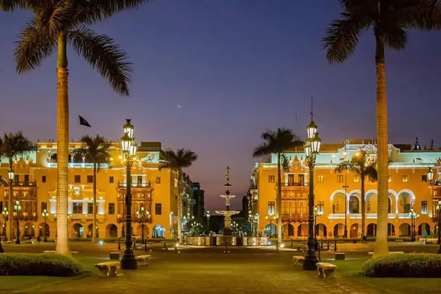
Ver y comprar →Lima Nocturna: City Tour por el Centro Histórico
S/ 600 para dos (S/ 300 por persona)
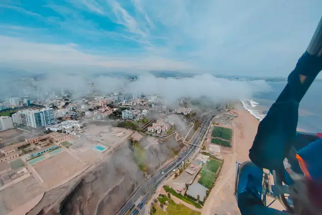
Ver y comprar →Vuelo en parapente a motor en Lima Peru
S/ 600 para dos (S/ 300 por persona)
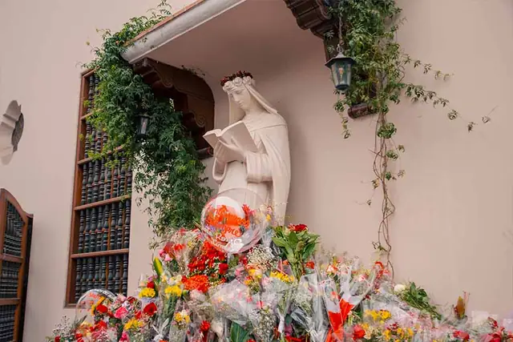
Ver y comprar →Tour Religioso en Lima: Fe, Historia y Tradición
S/ 750 para dos (S/ 375 por persona)
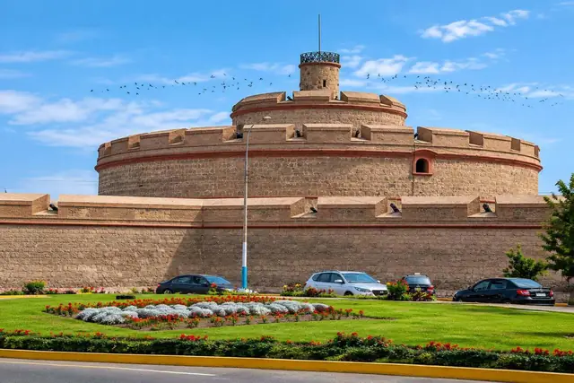
Ver y comprar →Tour Callao Monumental y Real Felipe: Historia y Cultura Viva
S/ 750 para dos (S/ 375 por persona)
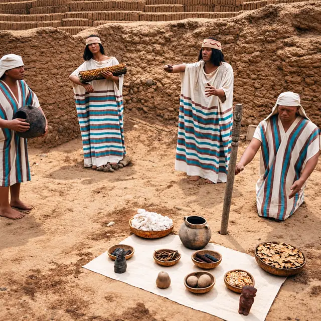
Ver y comprar →Tour Huaca Pucllana: Entre Pirámides y Pasado Precolombino
S/ 810 para dos (S/ 405 por persona)
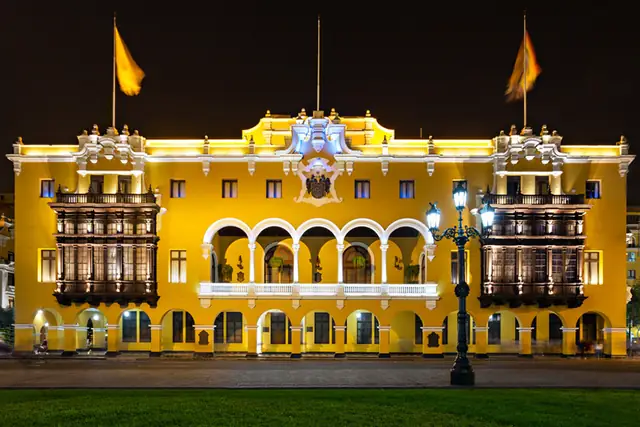
Ver y comprar →Tour Nocturno en Lima con Degustación de Pisco, Cena y Postre
S/ 900 para dos (S/ 450 por persona)
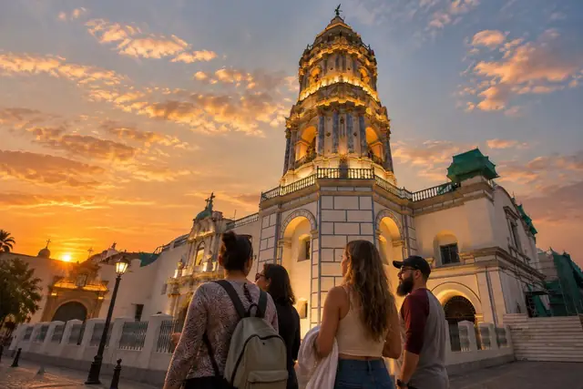
Ver y comprar →City Tour Lima Privado: Plaza Mayor y Catacumbas
S/ 975 para dos (S/ 487.50 por persona)
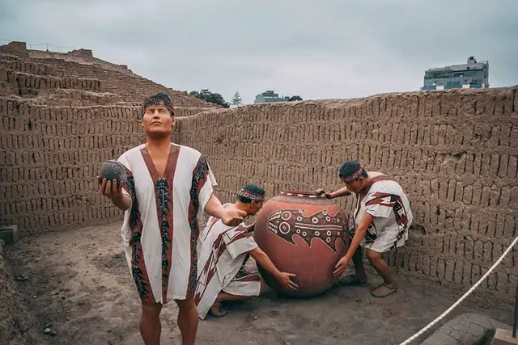
Ver y comprar →Expedición a Pachacamac y Huaca Pucllana Arqueología e Historia
S/ 1,087.50 para dos (S/ 543.75 por persona)
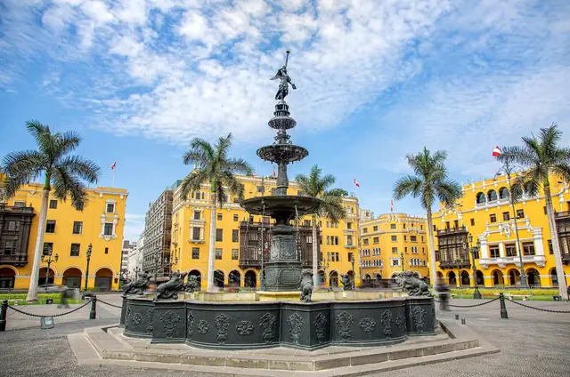
Ver y comprar →Tour Privado de Escala en Lima: Del Aeropuerto al Corazón de la Ciudad
S/ 1,125 para dos (S/ 562.50 por persona)
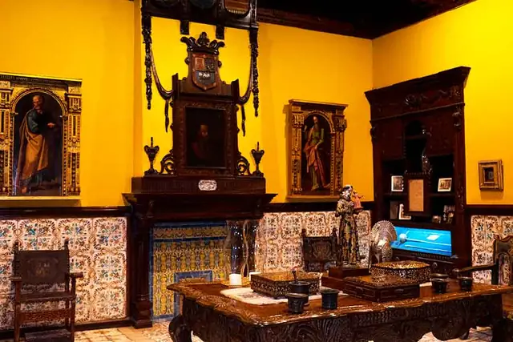
Ver y comprar →8-Horas Tour Privado Casa Aliaga y Museo del Oro con almuerzo
S/ 1,125 para dos (S/ 562.50 por persona)
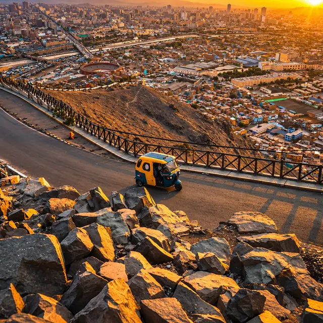
Ver y comprar →Tour de Contrastes de Lima: Del Cerro San Cristóbal al Corazón Histórico
S/ 1,125 para dos (S/ 562.50 por persona)
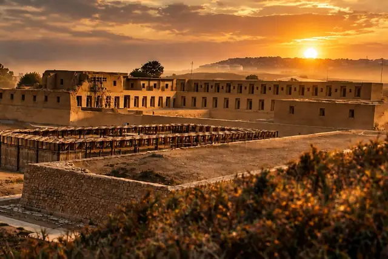
Ver y comprar →Tour Privado al Museo de Pachacamac y Ruinas del Oráculo Inca
S/ 1,125 para dos (S/ 562.50 por persona)
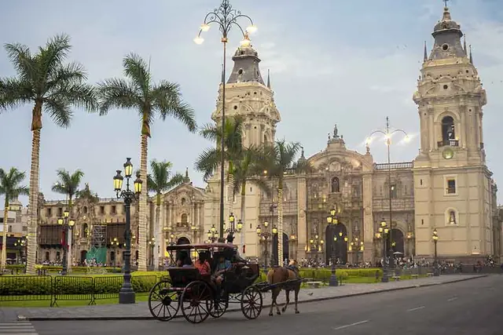
Ver y comprar →Tour de Lima en un Día: Lugares Imperdibles
S/ 1,200 para dos (S/ 600 por persona)
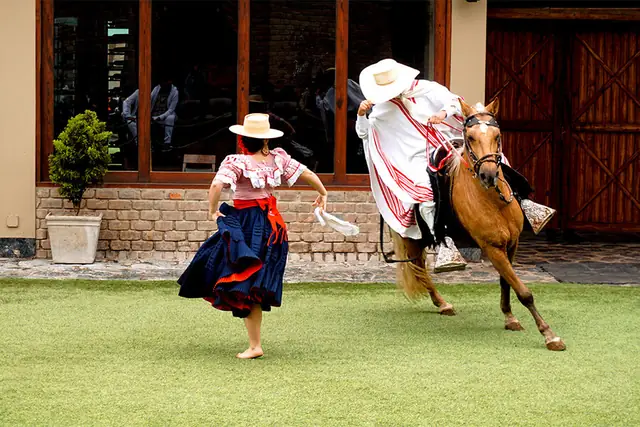
Ver y comprar →Pachacamac con Almuerzo Show y Caballos de Paso
S/ 1,200 para dos (S/ 600 por persona)
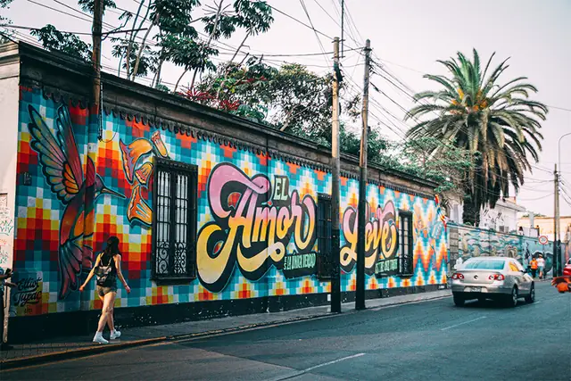
Ver y comprar →Pachacamac, Barranco y Callao Monumental: Tres Rostros de Lima
S/ 1,312.50 para dos (S/ 656.25 por persona)
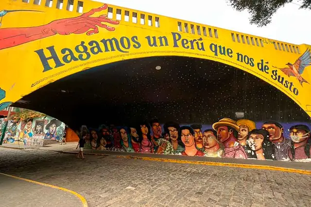
Ver y comprar →Experiencia de un Día por Lima: Barranco Centro Histórico y Huaca Pucllana
S/ 1,500 para dos (S/ 750 por persona)
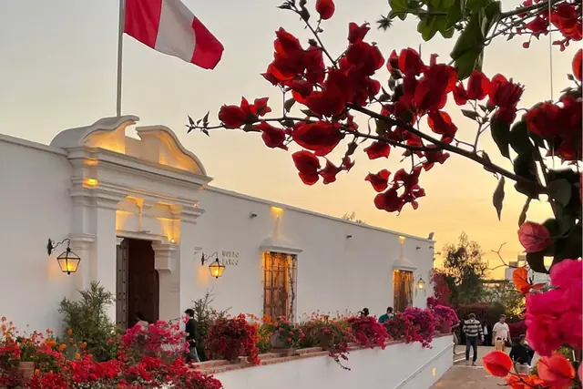
Ver y comprar →Explora lo Mejor de Lima en 1 Día: Centro Histórico, Casa Aliaga y Museo Larco
S/ 1,500 para dos (S/ 750 por persona)
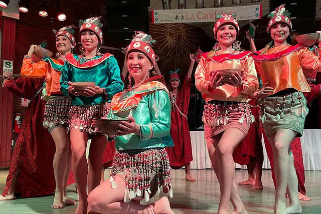
Ver y comprar →City Tour en Lima + Cena Show
S/ 1,500 para dos (S/ 750 por persona)
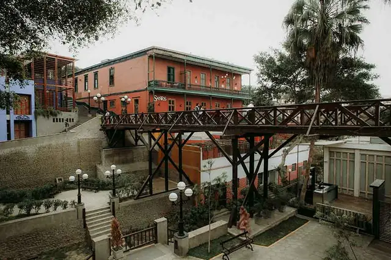
Ver y comprar →Pachacamac, Barranco y Centro Histórico: Del Oráculo a las Catacumbas
S/ 1,575 para dos (S/ 787.50 por persona)
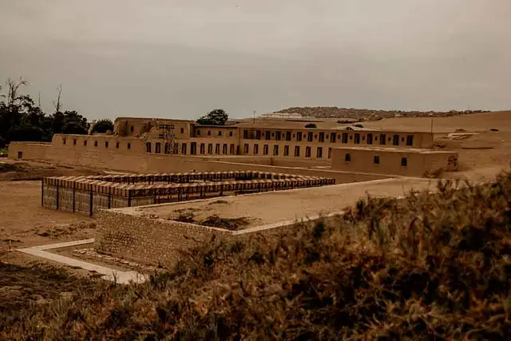
Ver y comprar →Tour Completo en Lima Pachacamac Barranco Centro Histórico & Huaca Pucllana
S/ 1,650 para dos (S/ 825 por persona)
- Ver y comprar →
Recorrido Guiado por Lima y Callao – Real Felipe y Museo Larco
S/ 1,687.50 para dos (S/ 843.75 por persona)
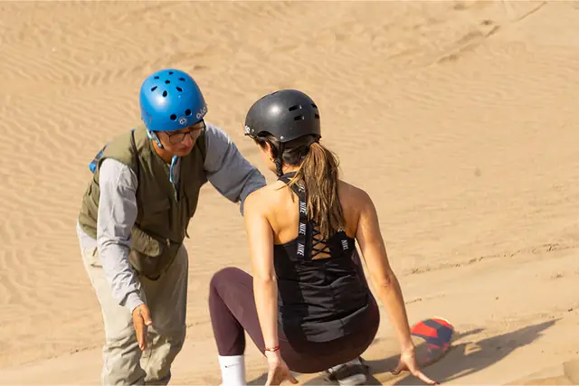
Ver y comprar →Tour de Sandboarding en Lima en 4×4 por el Desierto de Chilca
S/ 1,725 para dos (S/ 862.50 por persona)
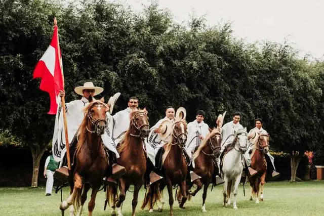
Ver y comprar →Tour al Santuario Arqueológico de Pachacamac con almuerzo en la Hacienda Ficus
S/ 1,875 para dos (S/ 937.50 por persona)
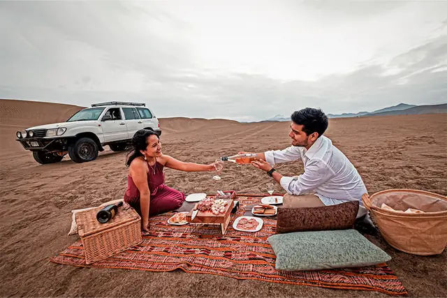
Ver y comprar →Tour de Sandboarding y picnic en Lima por el desierto de Chilca
S/ 2,400 para dos (S/ 1,200 por persona)
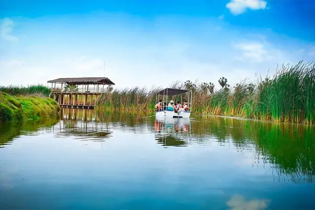
Ver y comprar →Pantanos de Villa y Chilca | Aventura Ecológica en Lima
S/ 2,475 para dos (S/ 1,237.50 por persona)
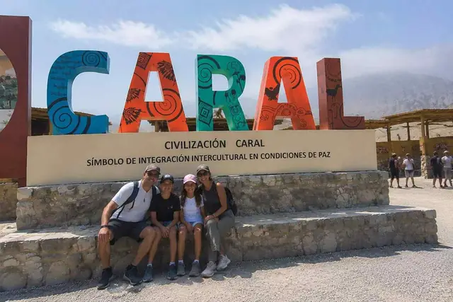
Ver y comprar →Day trip to Caral & Bandurria: La civilización más antigua de América
S/ 2,550 para dos (S/ 1,275 por persona)
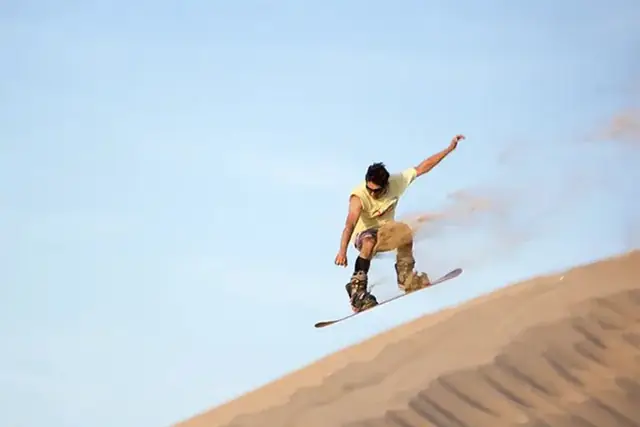
Ver y comprar →Sandboarding en Chilca + Visita Arqueológica a Pachacamac
S/ 2,625 para dos (S/ 1,312.50 por persona)
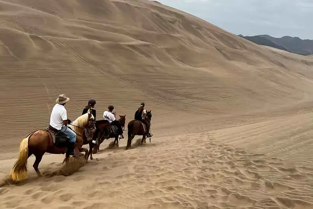
Ver y comprar →Visita a Pachacamac y Cabalga en Caballo de Paso desde Lima
S/ 2,700 para dos (S/ 1,350 por persona)
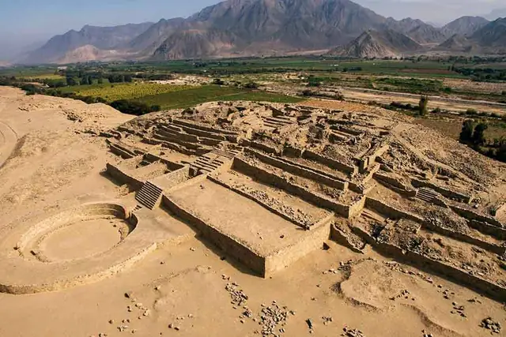
Ver y comprar →Day trip to Caral: La civilización más antigua de América – OFERTA
S/ 2,775 para dos (S/ 1,387.50 por persona)